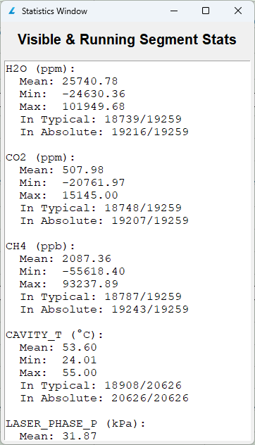
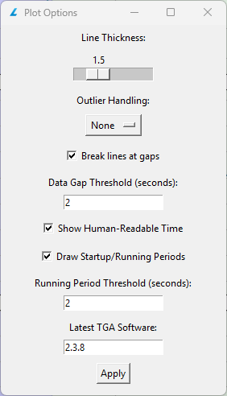

Building intuitive tools to turn complex analyzer data into decisions.
This portfolio shares my work modernizing LI-COR support workflows—automating TGA data parsing,
highlighting instrument warm-up/run states, and designing a GUI that surfaces the signals technicians need.
LI-COR Biosciences builds scientific instruments that measure gases like CO₂ and H₂O in environmental research. These instruments output large time-series files (TGA) that technicians review to verify performance and troubleshoot issues. Historically, this review required reformatting data in Excel and hand-building multiple charts—time-consuming, inconsistent, and hard to repeat.
My project replaces that manual process with a dedicated tool that ingests files, applies domain-specific logic (e.g., detecting warm-up vs. running), and renders clear visual summaries so support engineers can act quickly.
Role & Day-to-Day
How I worked across coding, UX, and collaboration.
Translate complexity: Turn raw sensor data into insights for non-experts—vital for any product role.
Iterate with users: Early, frequent feedback prevents over-engineering and accelerates delivery.
Own ambiguity: Break open-ended problems into testable pieces; document decisions for repeatability.
Quality mindset: Validate against edge cases so outputs are trusted in real support scenarios.
These habits transfer directly to future software roles—especially where domain expertise and UX meet (scientific tools, data platforms, instrumentation).
7800_vis — Data Viewer for LI‑7800
Automates TGA parsing and makes warm‑up/run states obvious.
Support engineers historically opened TGA files in Excel and built multiple charts by hand. I created a Python/Tkinter viewer that ingests files, detects startup vs. running spans, and highlights only the signals that matter—cutting review time and improving consistency.
Startup vs. Running: Auto-detected spans with user‑tunable thresholds keep analysis focused on valid regions.

Live Segment Stats: Per‑variable metrics and compliance counts update with viewport/filters.
Config Editor: Set typical/absolute ranges and toggle autoplots—no code changes needed.

Plot Options: Fine‑tune line weight, outliers, gaps, and span thresholds.
7500_sim — Simulator for LI‑7500 Series
Deterministic simulator to test pipelines and compare outputs to original datasets.
When devices aren’t always on‑hand, developers need reliable stand‑ins. I built a simulator that consumes L7X + data/GHG files, generates outputs, and compares against source data to quantify fidelity.
Run Inputs: Select L7X + GHG data and enable options (smoothing, diff‑to‑original) before executing.Accuracy Report: Aggregated deltas and regression fits verify simulator fidelity per metric.
CORA — Internal AI Assistant
Chat interface + metrics to help employees find answers faster.
I contributed to an internal chatbot (CORA) and built metrics using Prometheus → Grafana to monitor adoption and usage. Work included prompt/UX tweaks, knowledge curation, and basic governance notes for safe internal use.
Chat UI: Minimal interface emphasizes quick questions and internal‑only guidance.Adoption Trend: Prometheus counters surfaced in Grafana (active vs. daily unique users).
In My Words
Two short reflections from my internship experience.
As I approached my final semester at UNL, I joined LI-COR as an Applications Analyst Intern with a strong academic foundation from my capstone and thesis projects. Even so, I encountered challenges that pushed me to think creatively and problem-solve in new ways. One of the most significant was designing a faster, more effective way for the support team to view and analyze TGA data from our gas analyzers. Their workflow required opening files in Excel, reformatting them, and manually creating multiple charts—tedious and time-consuming. My goal became clear: automate the process so their daily work would be noticeably more efficient.
Professional Identity
My primary responsibilities involved building custom software solutions for our customers and meeting regularly with my team to align on goals for the final product. This work has been heavily Python-based, which allowed me to expand my knowledge of libraries and find the best tools for each challenge. While some tasks—like bug fixing—were routine, the most rewarding moments came when building something new from scratch. The casual, collaborative work environment made it easy to exchange ideas, stay flexible, and integrate feedback, reinforcing my interest in working at the intersection of technical problem solving and teamwork.